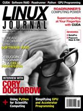

Shutdown Archive web server
Search:
Linux Journal
Issue #175/November 2008

Features
The Roadrunner Supercomputer: a Petaflop's No Problem
by James Gray
IBM and Los Alamos National Lab teamed up to build the world's fastest supercomputer.
Massively Parallel Linux Laptops, Workstations and Clusters with CUDA
by Robert Farber
Unleash the GPU within!
Increase Performance, Reliability and Capacity with Software RAID
by Will Reese
Put those extra hard drives to work.
Overcoming the Challenges of Developing Applications for the Cell Processor
by Chris Gottbrath
Introducing techniques for troubleshooting programs written for the Cell processor.
Indepth
Cory Doctorow—Linux Guru?
by Dan Sawyer
Cory Doctorow on DRM, his new novel and more.
How We Should Program GPGPUs
by Michael Wolfe
Porting to GPUs without heroic programming effort.
Use Python for Scientific Computing
by Joey Bernard
Leverage the benefits of Python for scientific computing.
Columns
Shawn Powers' Current_Issue.tar.gz
Sometimes, Fast Just Isn't Enough
Reuven M. Lerner's At the Forge
Book Roundup
Marcel Gagné's Cooking with Linux
Warp-Speed Blogging
Dave Taylor's Work the Shell
Pushing Your Message Out to Twitter
Mick Bauer's Paranoid Penguin
Samba Security, Part I
by Mick Bauer
Kyle Rankin's Hack and /
Memories of the Way Windows Were
Doc Searls' EOF
Lincoln and Whitman's Unfinished Business
Reviews
Tracking Your Business Finances with NolaPro
by Mike Diehl
The Popcorn Hour A-100
by Daniel Bartholomew
In Every Issue
From the Editor
Letters
upFRONT
New Products
New Projects
Archive Index
Shutdown Archive web server
Search:
Copyright © 1994 - 2018
Linux Journal
. All rights reserved.